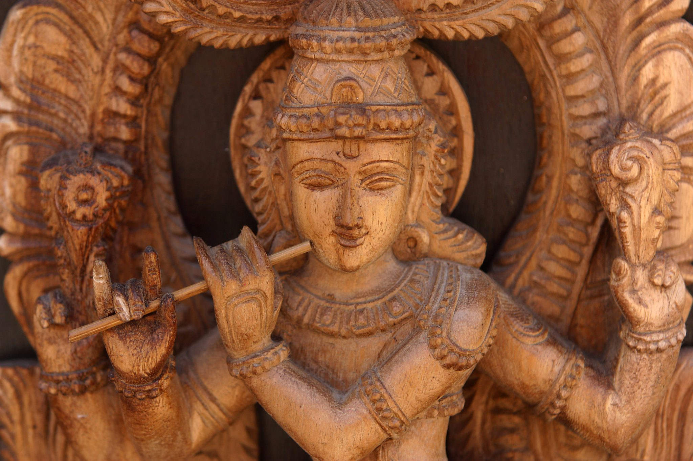
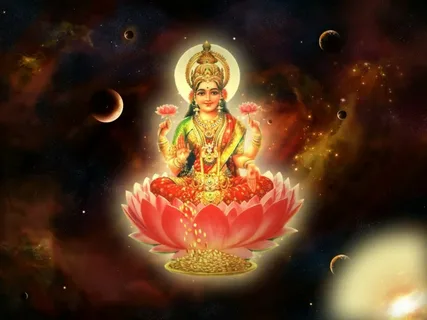

Религия
Индуизм. — самая большая национальная мировая религия. В конце ХХ века у нее насчитывалось более 800 миллионов сторонников (14 % населения земного шара). Индуизм доминирует в Индии и Непале, где более 80 % населения являются его приверженцами, а сама религия распространяется на все страны, где имеются индусские общины. В индуизме нет основателя, единой системы верований и общей доктрины. Его можно представить как собрание различных философских систем, религиозных традиций и верований.
История индуизма
Сам термин «индуизм» имеет европейское происхождение, а в Индии эта религия имеет название хинду-самая, или хинду-дхарма. Родиной индуизма является индийский субконтинент, а формирование его как религии происходило в период между I и V веками. Основой и идейным источником индуизма был брахманизм (VII век до н. э. — V век н. э.) и ведическая религия (XVI век до н. э. — VII век до н. э.). Между всеми тремя религиями имеется большое сходство, и верующие в основном молились одним и тем же богам. Верховным богом в ведической религии был Индра, бог грома и молнии, в брахманизме — Брахма, творец мира, а вот в учении индуизма верховные боги отличаются в зависимости от конфессии. В индуизме Брахма не считается верховным богом, что является главным отличием этой религии от брахманизма. В период с IV по VI век н. э. индуизм распространился по стране и стал господствующей религией, полностью вытеснив из Индии буддизм.
Акшая Трития

Акшая Трития считается одним из самых важных дней Ведического календаря. Он приходится на третий лунный день растущей половины лунного месяца Ваисакха. В день Акшая Трития Шастры рекомендуют совершать благочестивые дела, выполнять церемонии, делать важные покупки. Акшая Тритию также называют днём прочных и продолжительных достижений. "Акшая" в переводе с санскрита означает "неразрушимый", "прочный", "вечный", а трития - это 3-й день светлой половины лунного месяца. В это время Солнце и Луна находятся в экзальтации и дают наибольшие благословения.
Согласно Ведам, в день Акшая Трития ещё в древности было совершено первое благоприятное жертвоприношение во Вселенной. В этот день явился Господь Парашурама и началась благоприятная эпоха Трета-юга. В праздник Акшая Трития в Индии продажа золота и ювелирных украшений увеличиваются почти в 2 раза.